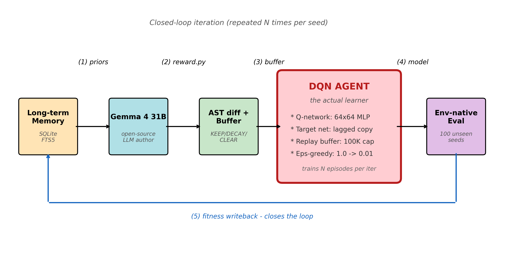
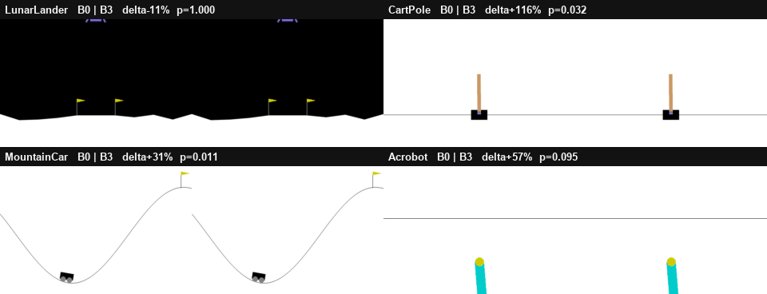
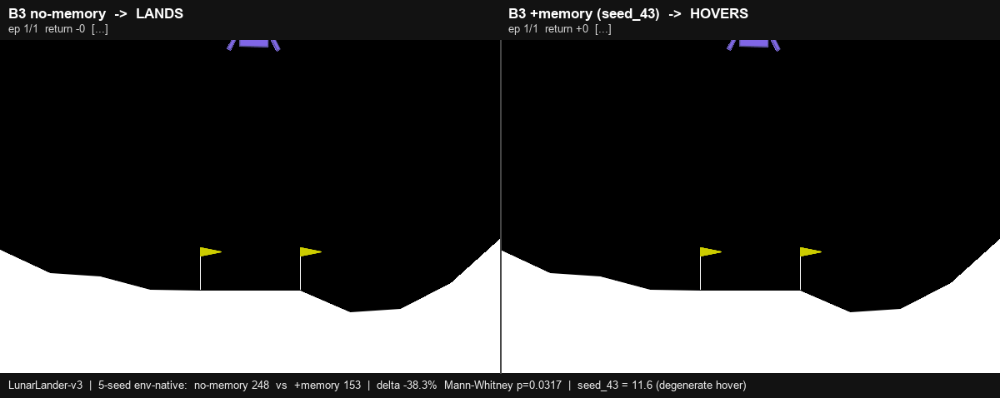
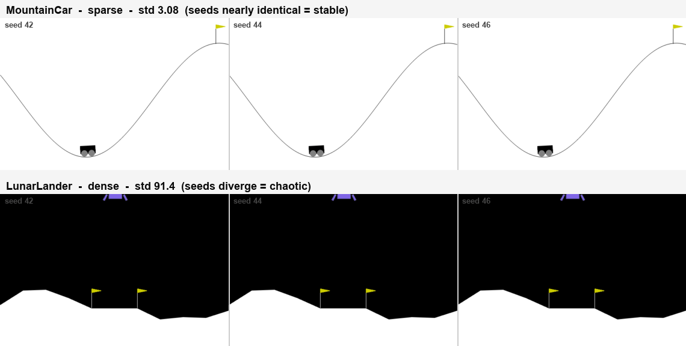
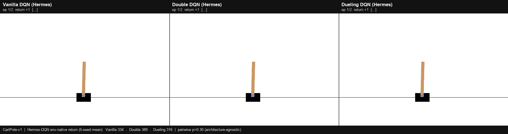

從研究動機出發，依序走過相關研究、系統方法、實驗結果，收束於結論。
只在「成功」那一刻給訊號，中間幾乎全是 0。探索訊號太弱，agent 常常學不動。
手工 reward shaping 雖能加速，卻把人的偏見寫進目標，且難以擴展到新任務。
兩端都不理想 → 能不能讓機器自動寫出好的獎勵函數？
三者同時解決後，LLM 自動獎勵設計能否普遍有效？
既有路線各自處理「模型／記憶」，但沒有一條正面處理「獎勵改變後的 replay buffer」。
三條線交會處，零整合驗證。本研究從 buffer-side（AST）切入，正交互補。
LLM 寫獎勵：缺跨輪記憶、不處理 buffer
記憶機制：DRL 多任務缺實證
buffer 端遺忘：未被處理
Nous Hermes 四層記憶[4]；OSWorld 12% → 66.3%[5]。
GB-DQN 走 value-side[6]；CHAIN 處理 churn[7]。
Ng 1999 potential-based shaping，保證策略不變[8]。

Gemma 4 31B（開源）取代 GPT-4 擔任 reward author，使整條管線可本地、可重現。
全保留
部分保留
衰減舊樣本
清空重來
環境原生獎勵當基準。CartPole／MountainCar 成功率 0%。
手寫的獎勵 placeholder，不是人類專家 baseline。
Gemma 單輪生獎勵，沒記憶、沒 buffer 管理。
完整系統：四層記憶＋AST buffer，閉環 5 輪。
拿掉記憶的消融組——專問「記憶本身」有沒有用。
拿掉 AST buffer 的消融組。兩組關鍵對照：B3-full vs B0、vs B3-no-memory。
稀疏環境 B3-hermes-full 全面領先 B0；密集 LunarLander 反而被 no-memory 超越。


無記憶時，LunarLander 平均回報穩定收在高分區。
記憶逼 LLM 一輪輪疊塑形、推離最優；三個稀疏環境效應 +37.5／+21.4／+0.4% 皆不顯著。機制：potential-based shaping drift[8]。


三變體全部正向；MountainCar 三變體皆顯著。
三變體皆負，密度反轉穩定。
三變體互比全部不顯著 → 與架構無關。
開源 Gemma 4 31B 取代 GPT-4 擔任 reward author，整條管線可重現[1]。
據我們所知，首次給出統計顯著的「記憶有害」結果（密集，p=0.0317）[8]。
提出以 per-seed std 為「塑形空間大小」的診斷指紋。
效果與 value network 架構正交，框架可插拔（Part 2）[9][10]。
提出 reward density 假說 — 記憶在稀疏受益、在密集有風險。
記憶不是免費升級：稀疏受益、密集有風險，應按任務 opt-in。